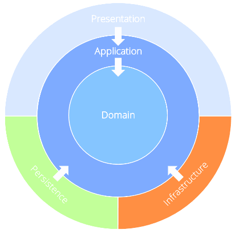

ONIONARCH.Template
A .NET reference implementation of Onion Architecture with CQRS dispatch and swappable persistence backends (SQL Server, PostgreSQL, MySQL).

API reference
The API Reference (top navigation) is generated from the XML documentation comments (///)
in the source code. Entry points by layer:
| Layer | Namespace |
|---|---|
| Domain | ONIONARCH.Domain.Entities |
| Application | ONIONARCH.Application |
| Persistence | ONIONARCH.Persistence |
| Infrastructure | ONIONARCH.Infrastructure |
| Presentation | ONIONARCH.Presentation.API, ONIONARCH.Presentation.Web, ONIONARCH.Presentation.Console |
Source, build instructions, and versioning details are in the repository README.